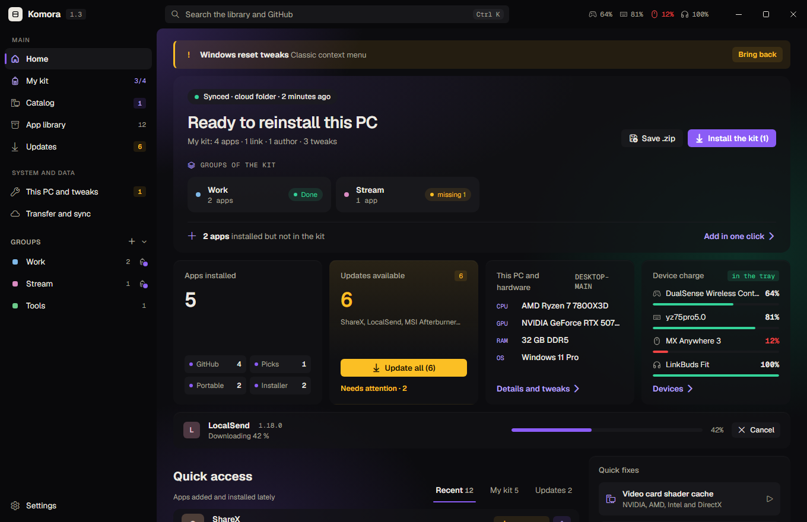
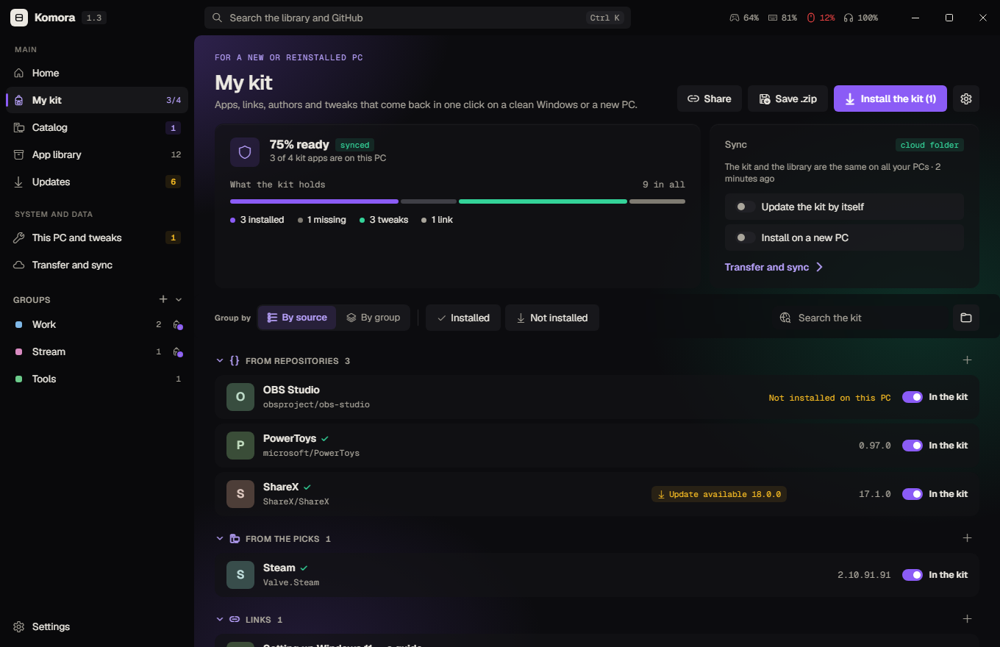
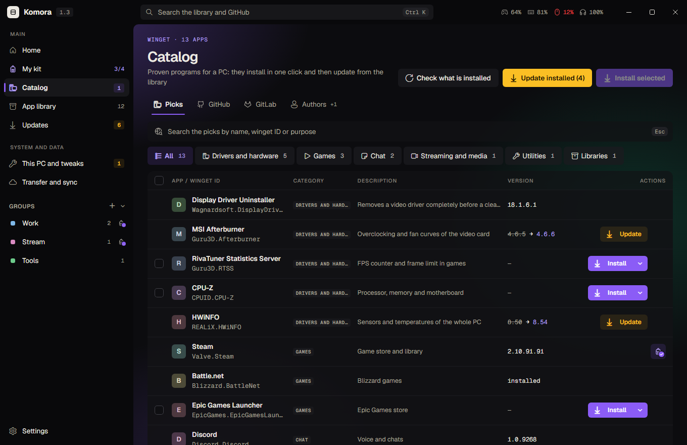
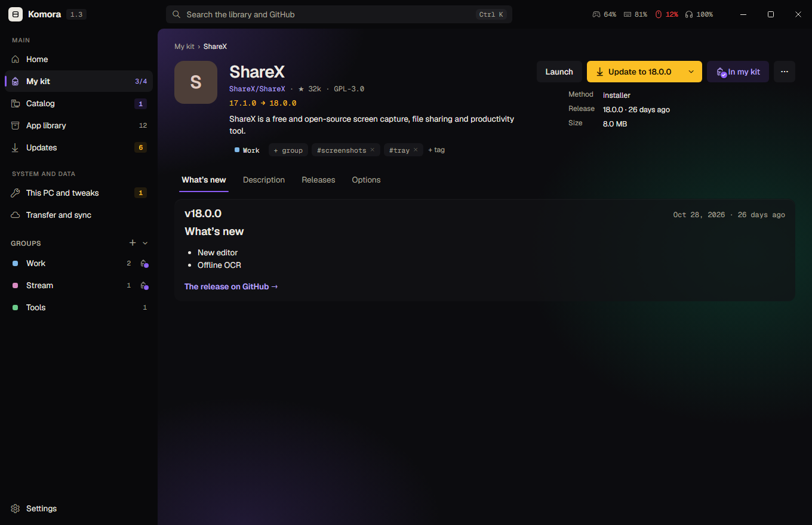
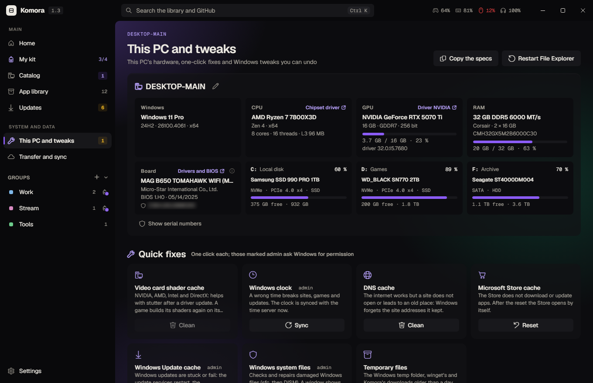

Your apps, moved to a new PC in one click
Komora keeps the apps and links you use in one library and brings them back after Windows is reinstalled. It also updates them, sets up Windows the way you like and fixes the usual troubles.

Reinstalling Windows, minus the pain
No more evenings of «what was that tool called again?» and downloading installers one by one.
Add your apps
Paste a GitHub, GitLab or Codeberg link, or pick from about 70 everyday programs in Picks — Steam, Discord, OBS, 7-Zip and more.
Mark My kit
The apps, links and tweaks you can't live without. The kit syncs through a secret GitHub Gist or travels as one zip.
Install the kit
On a new or freshly reinstalled PC, open Komora and press «Install the kit». Apps, their settings and your tweaks come back.
And while it sits in your tray
Everything else a fresh Windows needs, in one small app.
Updates on their own
New versions from GitHub, GitLab, Codeberg and winget, checked with the signature and the checksum before they install.
Windows tweaks
Switches with an undo button, and a heads-up when a Windows update quietly resets them.
One-click fixes
Shader cache, temporary files, DNS, a stuck Windows Update, Store cache, sfc and DISM.
This PC
Processor, video card, memory, board and disks, with links to the makers' driver and BIOS pages.
Safe by default
Authenticode signature, SHA-256 against the release, and an optional VirusTotal check for every file.
A library, not a list
Groups, tags and notes for apps and links, settings backups before each update, a rollback for portable apps.
A closer look
Dark or light, six backgrounds, its own title bar.




Make the next reinstall boring
Free, no account, no ads. One exe for Windows 10 and 11, x64 and ARM64.